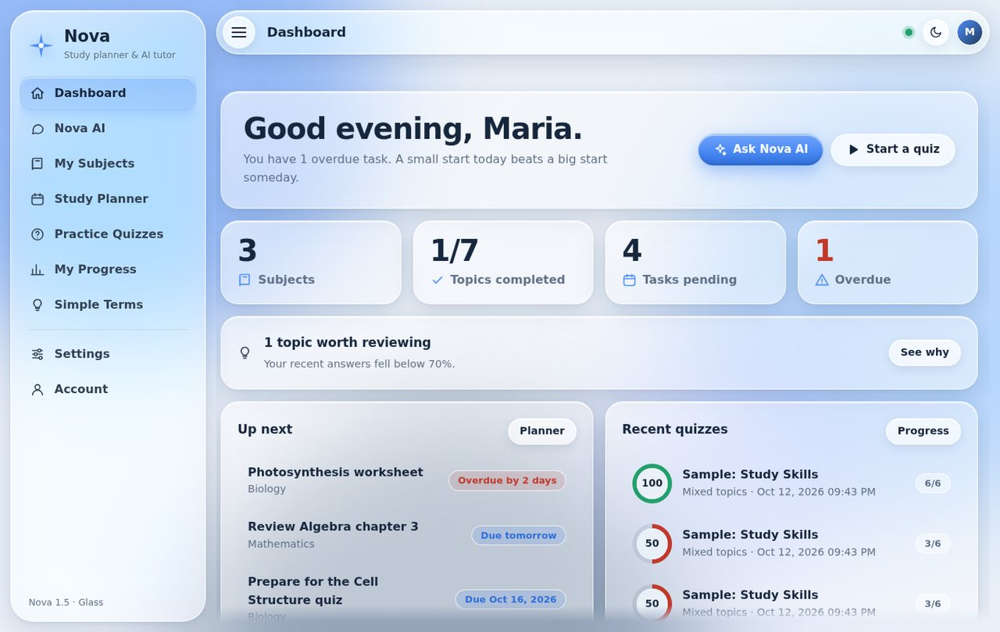
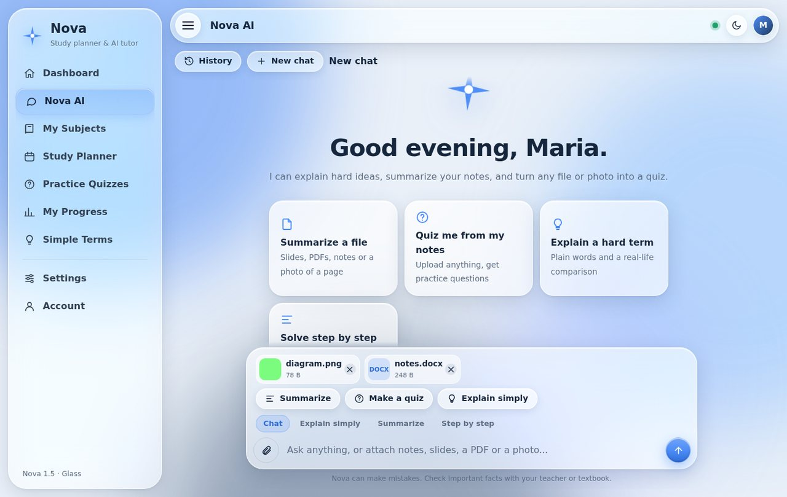
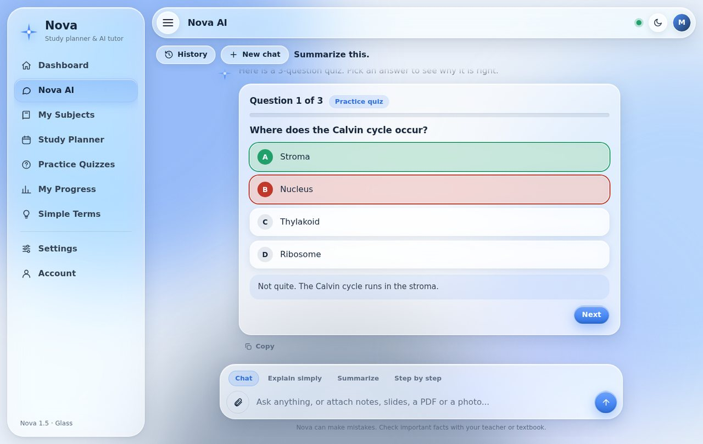
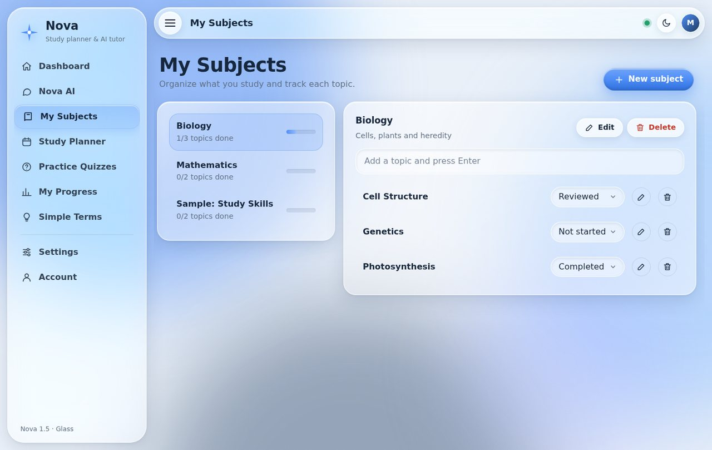
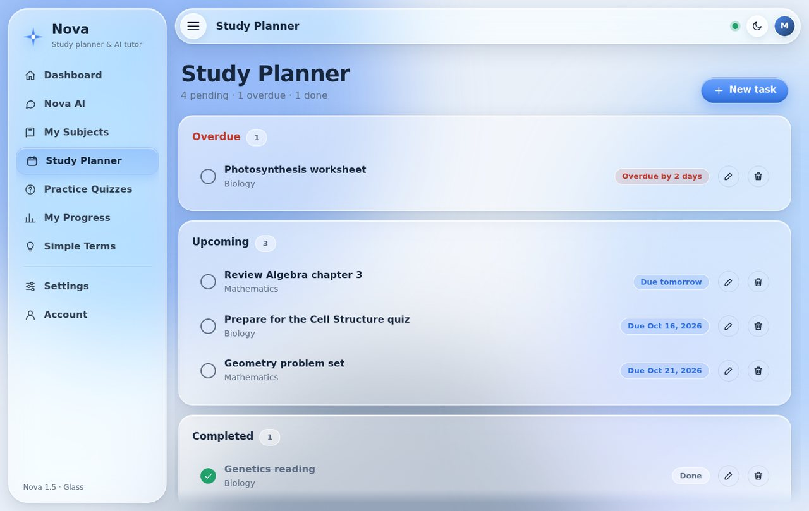
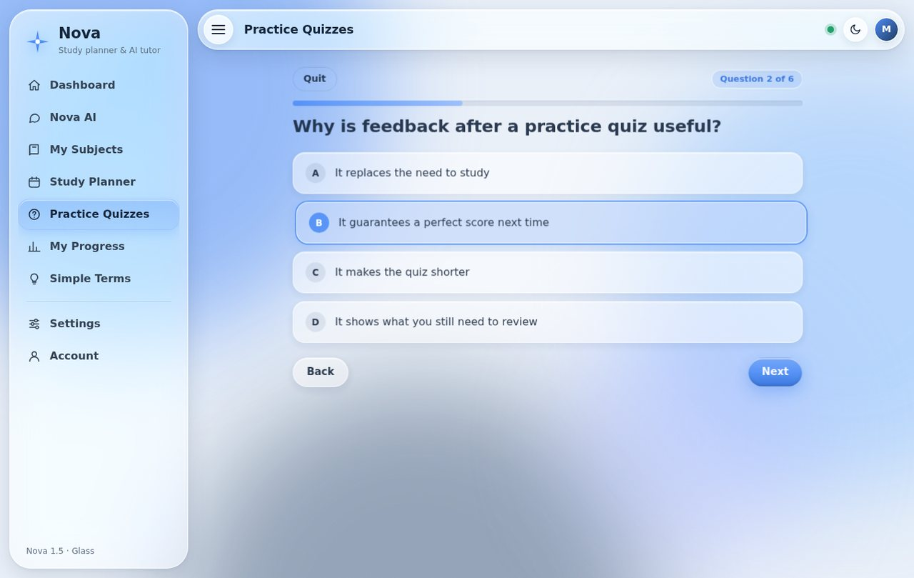
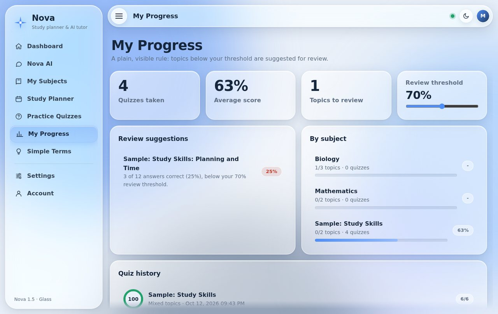
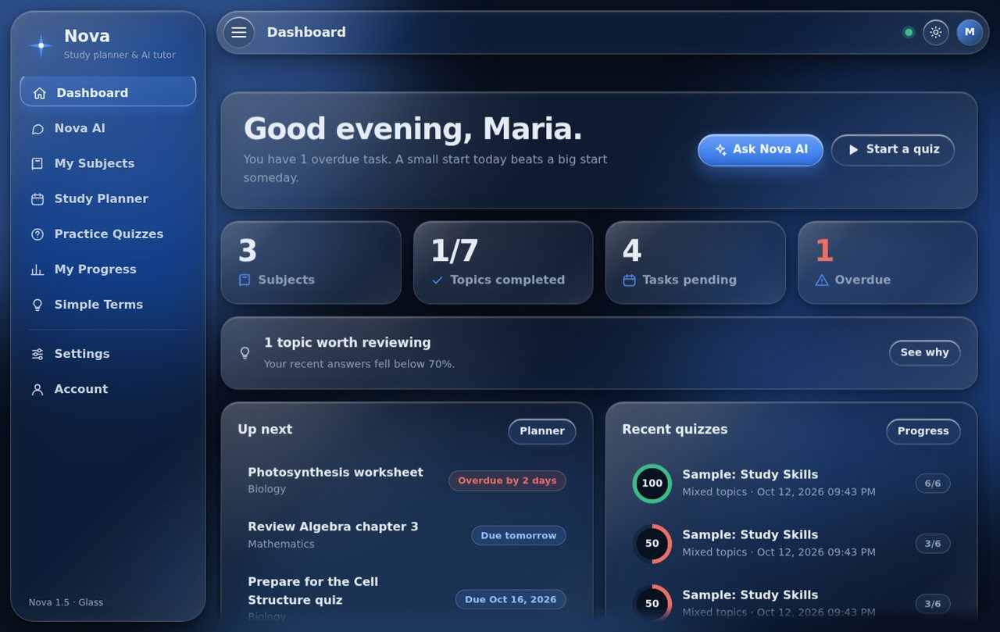

Meet Nova: a study planner, AI tutor and quiz app
Our proposed solution. A free desktop app that helps students organize subjects, track deadlines, and practice with their own questions and their own notes.
Prototype status. Nova is a working Python desktop app for Windows, built as a student prototype. Version 1.5 is a full redesign with an AI tutor. The screenshots below come from the real app. It has been tested by its developer only, not yet with other students.
What Nova does
- Nova AI tutorChat with a tutor that answers first and explains second, adapts to your level, and shows steps for maths and code. Pick a style: Chat, Explain simply, Summarize or Step by step.
- Files and photos inAttach a PDF, PowerPoint, Word file, spreadsheet, text file or a photo, by button, drag and drop, or paste. Nova summarizes it into a short overview, key points and terms to know.
- Quizzes from your materialTurn an attached file or photo into 5 to 15 multiple-choice questions with explanations. Answer them in the chat, or save them to a subject for later practice.
- Subjects and topicsOrganize what you study, and mark topics as not started, reviewed, or completed.
- Study plannerAdd tasks with due dates (picked from a calendar) and see what is upcoming, overdue, or done.
- Practice quizzesAnswer multiple-choice questions, get a score, and review the correct answers.
- Progress and review suggestionsIf your correct answers on a topic fall below a threshold (70% to start, and you can change it), Nova suggests reviewing that topic and tells you why. The threshold is a starting point, not a measure of mastery.
- Dashboard and Simple TermsA summary built only from your saved data, and a searchable list of hard words (like instantiate or inheritance) explained in plain language. You can add your own terms.
About the AI. The AI parts need internet and a personal key that stays on your computer. AI can make mistakes, so check important facts with your teacher or textbook. In the free Gemini setup, text and files you send may be used by the provider to improve its products, so never send personal information or private schoolwork. Nova asks before the first message is sent.
Design choices
- Free, and mostly offlineSubjects, planner, quizzes, progress and Simple Terms work without internet or an account, which helps students with limited connectivity. Only the AI tutor needs internet.
- Data stays on your deviceEverything is saved locally in a SQLite database, reducing privacy risk. The only things that leave your computer are the messages and files you choose to send to the AI.
- Simple, visible rulesReview suggestions come from a plain scoring rule, not artificial intelligence, so you can see exactly why a topic was suggested.
- You stay in chargeThe tutor is told to coach on homework, admit when it is unsure, and point to where in your file an answer came from. Writing and answering your own questions still practices recall better than copying answers.
- Calm, readable designLiquid glass panels, light and dark themes, adjustable text size and zoom, a Reduce transparency switch, and a menu you can hide with the three-line button.
Screenshots








Limitations. Nova is a single-user app. It supports only multiple-choice questions, the AI needs internet and can be wrong, quizzes made from files depend on how readable the file is, and its benefits have not been tested with students.